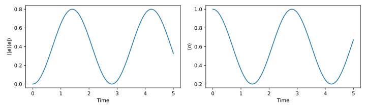
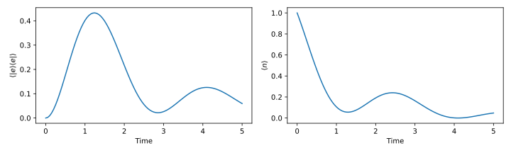
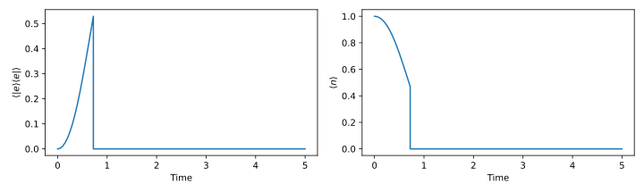
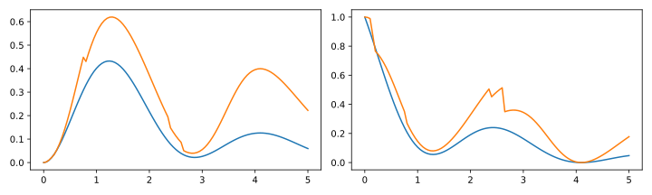

Tutorial
In this tutorial we will step through the common tasks necessary to simulate a quantum system. At each step links to documentation and examples, that explain the topic in more detail, will be provided.
In order to use the QuantumOptics.jl library it has to be loaded into the current workspace.
using QuantumOpticsBases
The first step is always to define a suitable basis for the quantum system under consideration. For example a FockBasis can be used to describe a field mode inside of a cavity. It takes an Integer as argument which specifies the photon number cutoff.
b = FockBasis(20)Many quantum systems are already implemented:
States and Operators
For these quantum systems, functions that create the typical operators and states are provided. Typically, they take a basis as argument and create the operator or state in respect to this basis.
a = destroy(b)at = create(b)alpha = 1.5psi = coherentstate(b, alpha)They can be combined in all the expected ways.
dpsi = -1im*(a + at)*psiThe dagger() function can be used to transform a ket state into a bra state which for example can be used to create a density operator
rho = psi ⊗ dagger(psi)# Alternatively, replace the ⊗ symbol (typed with \otimes)# by tensor(psi, dagger(psi))or to calculate expectation values.
println("α = ", dagger(psi)*a*psi)α = 1.4999999999991955 + 0.0imAlternatively. the expect() function can be used.
println("α = ", expect(a, psi))α = 1.4999999999991955 + 0.0imComposite systems
Most interesting quantum systems consist of several different parts, for example two spins coupled to a cavity mode.
ω_atom = 2ω_field = 1# 2 level atom described as spinb_spin = SpinBasis(1//2)sp = sigmap(b_spin)sm = sigmam(b_spin)H_atom = ω_atom*sp*sm# Use a Fock basis with a maximum of 20 photons to model a cavity modeb_fock = FockBasis(20)a = destroy(b_fock)at = create(b_fock)n = number(b_fock)H_field = ω_field*nCombining operators from those two systems can be done with the tensor() function or with the equivalent $\otimes$ operator.
Ω = 1H_int = Ω*(a ⊗ sp + at ⊗ sm)To extend the single system Hamiltonians $H_\mathrm{atom}$ and $H_\mathrm{spin}$ to the composite system Hilbert space, one possibility is to combine them with identity operators from the opposite sub-system.
I_field = identityoperator(b_fock)I_atom = identityoperator(b_spin)H_atom_ = I_field ⊗ H_atomH_field_ = I_atom ⊗ H_fieldHowever, especially for larger systems this can become tedious and it's more convenient to use the embed() function.
b = b_fock ⊗ b_spin # Basis of composite systemH = embed(b, 1, H_field) + embed(b, 2, H_atom) + H_intCreating composite states works completely the same.
ψ0 = fockstate(b_fock, 1) ⊗ spindown(b_spin)Time evolution
Several different types of Time-evolution are implemented in QuantumOptics.jl:
- Schrödinger time evolution
- Master time evolution
- Monte Carlo wave function time evolution (also called quantum trajectories)
All of them share a very similar interface so that changing from one to another is mostly done by changing the function name:
timeevolution.schroedinger(tspan, psi0, H)timeevolution.master(tspan, psi0/rho0, H, J)timeevolution.mcwf(tspan, psi0, H, J)They all return two vectors tout and states.
Schrödinger equation
Let's now analyze the dynamics of the system according to the Schrödinger equation.
tspan = [0:0.05:5;]tout, ψt = timeevolution.schroedinger(tspan, ψ0, H);The results can be visualized using for example matplotlib.
using PyPlotfigure(figsize=[10, 3])subplot(1, 2, 1)xlabel("Time")ylabel(L"$\langle |e\rangle \langle e| \rangle$")plot(tout, real(expect(2, sp*sm, ψt)))subplot(1, 2, 2)xlabel("Time")ylabel(L"$\langle n \rangle$")plot(tout, real(expect(1, n, ψt)));
Master equation
Add photon loss to the cavity can be achieved by introducing a jump operator a. This means the system is now an open quantum system and is described by a master equation.
κ = 1.J = [embed(b, 1, a)]tout, ρt = timeevolution.master(tspan, ψ0, H, J; rates=[κ]);figure(figsize=[10, 3])subplot(1, 2, 1)xlabel("Time")ylabel(L"$\langle |e\rangle \langle e| \rangle$")plot(tout, real(expect(2, sp*sm, ρt)))subplot(1, 2, 2)xlabel("Time")ylabel(L"$\langle n \rangle$")plot(tout, real(expect(1, n, ρt)))
Monte Carlo wave function
Alternatively, one can use the MCWF method to analyze the time evolution of the system. Physically, it can be interpreted as an experimental setup where every photon leaving the cavity is measured by a photon counter, thereby projecting the system onto the state $| \psi\rangle \rightarrow a |\psi\rangle$. This leads to a coherent time evolution according to a Schrödinger equation interrupted by these jumps at certain random points in time.
figure(figsize=[10, 3])subplot(1, 2, 1)xlabel("Time")ylabel(L"$\langle |e\rangle \langle e| \rangle$")subplot(1, 2, 2)xlabel("Time")ylabel(L"$\langle n \rangle$")tout, ψt_mcwf = timeevolution.mcwf(tspan, ψ0, H, J; seed=UInt(0), display_beforeevent=true, display_afterevent=true);subplot(1, 2, 1)plot(tout, real(expect(2, sp*sm, ψt_mcwf)))subplot(1, 2, 2)plot(tout, real(expect(1, n, ψt_mcwf)))
In the statistical average the MCWF time evolution is equivalent to the time evolution according to the master equation.
Ntrajectories = 10exp_n = zeros(Float64, length(tspan))exp_e = zeros(Float64, length(tspan))function fout(t, psi) i = findfirst(isequal(t), tspan) N = norm(psi) exp_e[i] += real(expect(2, sp*sm, normalize(psi))) exp_n[i] += real(expect(1, n, normalize(psi)))endusing Random; Random.seed!(0)for i=1:Ntrajectories timeevolution.mcwf(tspan, ψ0, H, J; fout=fout)endfigure(figsize=[10, 3])subplot(1, 2, 1)plot(tspan, real(expect(2, sp*sm, ρt)))plot(tspan, exp_e/Ntrajectories)subplot(1, 2, 2)plot(tspan, real(expect(1, n, ρt)))plot(tspan, exp_n/Ntrajectories)